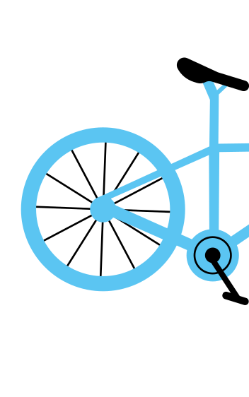
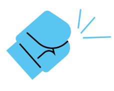
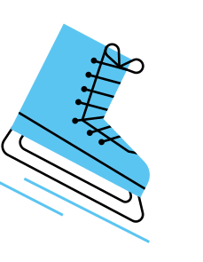
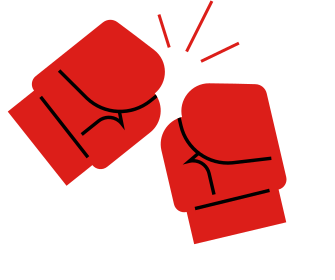
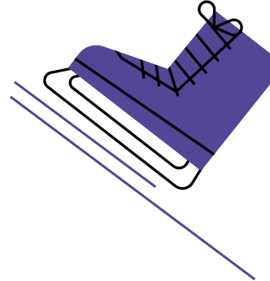
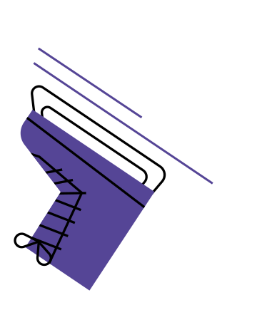
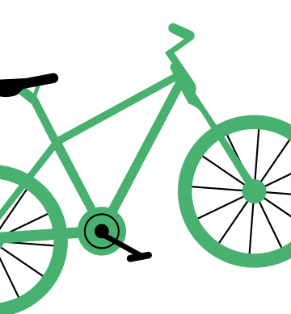
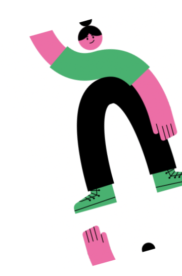
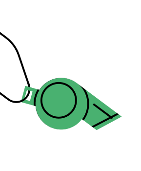

La Course Continue
Les femmes dans le sport, c’est d’abord l’histoire d’un combat permanent. Si aujourd’hui, on peut s’émerveiller devant les performances et médailles de nos athlètes préférées, c’est parce que de nombreuses femmes se sont battues avant elles pour y arriver.
 Savais-tu que les femmes ont intégré certains sports de combat il y a moins de 50 ans ?


Mais rassure-toi, les sportives sont bien décidées à ne pas rester sur le banc de touche. L’égalité femmes-hommes n’est pas encore la norme dans le milieu sportif, mais elle progresse ! Découvre les quelques évolutions marquantes de ces 24 dernières années…


Salut ! Moi c'est Victoire
Salut ! Moi c’est Victoire ! Je vais t’accompagner tout au long de cette expérience. A travers cette plateforme interactive, tu vas découvrir une partie de l’exposition “Sportive à la Une” du magazine Les Autres Possibles, consacrée aux femmes dans le sport. Amuses-toi bien!

2006
Arrivée du plan de féminisation
Un plan de féminisation? Ces termes sont sûrement très vagues pour toi. Laisse-moi t’expliquer! Au départ, la majorité des sports ne prenait pas vraiment en compte le public féminin. C’est pourquoi, en 2006, le handball, le basket-ball, le cyclisme et le football s’engagent à créer un plan dé féminisation dans leurs fédérations.
Tu te demandes peut-être quels sont les objectifs? Il y en a plusieurs, mais le but principal est d’adapter la discipline sportive aux femmes et de faciliter l’accès des femmes aux postes à responsabilité. Mais ce plan ne devient obligatoire qu’en 2013 pour tous les sports!

Exemple d’une femme active dans une fédération sportive féminine.
Portrait
Marilys Audran

27 ans, présidente de l’association nantaise de rugby féminin (ANRF). Demie de mêlée dans l’équipe de l’ANRF
“Être joueuse de rugby, c’est une lutte au quotidien. En 2005, des femmes courageuses ont décidé de créer leur propre club à Nantes : l’ANRF. Ça demande beaucoup de temps et d’énergie, mais on a notre liberté et notre indépendance.”
Marilys a commencé le rugby grâce à ses professeurs d’EPS au collège. Très rapidement, ces derniers lui ont proposé d’intégrer la future section féminine de rugby, ce qu’elle a accepté.
2010
Création des Jeux Olympiques de la Jeunesse.
Les Jeux olympiques de la jeunesse (JOJ), ça ne te dit peut-être pas grand chose? C’est normal! Et pourtant, cette compétition s’est voulue paritaire avant les JO classiques. En 2020, par exemple, il y avait 940 sportifs et 940 sportives.
Les JOJ sont destinés aux jeunes athlètes d’élite, âgés de 15 à 18 ans, et sont quasi-semblables aux Jeux olympiques pour adultes.
Leur but est de rassembler des jeunes du monde entier autour de leurs passions, tout en intégrant une dimension éducative sur la protection des athlètes ou le travail sur la performance, par exemple. L’édition 2024 a lieu dans la province de Gangwon en Corée du Sud. Cette année aussi, les JOJ sont paritaires et deux nouvelles épreuves mixtes ont été ajoutées.

Exemple d’une athlète préparant les jeux olympique.
Portrait
Eva Cabrerizo
19 ans, membre du Pôle Espoir de tir à l’arc.
“Rentrer au Pôle espoirs, ça a été ma plus belle victoire. Le mental, c’est l’une des choses les plus dures à gérer. Une compétition, c’est stressant. J’ai parfois été découragé. Le but ultime, ce sont les Jeux Olympiques. Ça fait rêver.”
L’amour d’Eva pour les cibles et l’arc a commencé lorsqu’elle avait 6 ans. Lorsqu’elle a eu l'occasion, elle a tout fait pour intégrer un des Pôle Espoir les plus réputés en France. Pendant 3 ans, elle a pu bénéficier d’un cursus sur mesure.
2012
Première femme de l’UFC
Savais-tu que la première catégorie féminine d’Arts Martiaux Mixtes (MMA) a été créée il y a 12 ans ? C’est la catégorie “poids coqs féminins”. La première championne de cette division s’appelle Ronda Rousey, une catcheuse américaine originaire de Californie.
En 2013, elle a affronté Liz Carmouche pour la première ceinture féminine de l’UFC, l’organisation américaine de MMA. On parle ici de la première confrontation féminine de MMA du pays ! Du côté de la France, il a fallu attendre encore un peu, car c’est en 2021 que Manon Fiorot devient la première française à remporter ce championnat.
Exemple d’une femme évoluant dans un sport de combat.
Portrait
Tévi Say

47 ans, pionnière du MMA en France et fondatrice du club de combat MMA Girls.
“J'ai créé la section MMA Girls à Paris, puis à Nantes. Ce sport, c’est une excuse pour donner envie aux femmes d’utiliser leurs corps autrement. Au MMA, mon corps n’est pas un fardeau, quelque chose que je dois protéger, mon corps devient un outil, voire une arme.”
C’est à 23 ans que Tévi se passionne pour le MMA, ce sport de combat qui lui offre une grande liberté d’expression. Aujourd’hui coach dans son club de combat, elle a été la première française à combattre en MMA.
2019 - 2020
Libération de la parole
Oups, je triche un peu en te donnant deux dates… C’est parce que depuis quelques années, la parole se libère sur les agressions que les femmes subissent dans le monde du sport.
D’abord, c’est grâce à une enquête du média Disclose en 2019, qui révèle que de nombreuses affaires de violences sexistes et sexuelles (VSS) ont été étouffées, et les agresseurs protégés.
Tu te rends compte, les femmes doivent se battre pour intégrer le milieu du sport, et en plus elles n’y sont même pas en sécurité ! Heureusement, le mouvement #MeToo a généré une vague de témoignages de sportives qui a permis de briser le tabou.
Victime ou témoin de violences ? Il existe un numéro d’écoute et d’information, le 3919. En cas d’urgence, appelez le 17.
Exemple d’une femme évoluant dans un sport présentant des violences sexuelles.
Portrait
Christèle Bellet

59 ans, entraîneure de patinage artistique depuis plus de 40 ans.
“En tant qu'élève, certains profs ont la main baladeuse mais tu ne t’en rends pas compte. Dans ce sport, on a besoin de te toucher pour te replacer, d’un point de vue technique. Aujourd’hui, tous les membres du club ont suivi une formation obligatoire pour être sensibilisé à ces violences sexistes et sexuelles qui arrivent dans n’importe quel sport.”
Christèle a tout d’abord commencé sa carrière sur la glace en tant que patineuse. Mais très vite, elle s’est rendue compte que ce qu’elle voulait faire c’était amener les enfants à progresser.
2022
(retour du) Tour de France féminin
Bonne nouvelle, les femmes reviennent dans la course ! Alors qu’il avait disparu en 2010 par manque de financement, le Tour de France féminin a fait son grand retour il y a deux ans. Et oui, dès qu’il faut parler argent, on a la fâcheuse tendance de sacrifier le sport féminin avant le sport masculin.

En tout cas, c’est une étape importante pour le cyclisme féminin, au sens propre comme figuré, car les coureuses vont gagner de la visibilité et des sponsors. Par contre, il y a encore du chemin à faire sur l’égalité des récompenses : la vainqueure gagne 50 000 €, c’est cinq fois moins que le maillot jaune masculin…
Exemple d’une femme évoluant dans le cyclisme.
Portrait
Chloé Michel

27 ans, manageuse de Team Elles (Pays de la Loire)
“L’objectif du Team Elles est d’amener nos cyclistes au plus haut niveau, pourquoi pas jusqu’au Tour de France féminin. J’accompagne les filles dans un triple projet : sportif, social et scolaire. Certaines de nos cyclistes sont déjà passées dans des équipes professionnelles.”
Ancienne pratiquante de roller, Chloé a rejoint le milieu des deux-roues en 2021. Elle a intégré la Team Elles, une association pour le cyclisme féminin, où elle forme 10 jeunes filles à devenir des cyclistes de haut niveau.
2022*
Une femme arbitre en Coupe du Monde masculine
Une femme arbitre une compétition internationale masculine. Cela ne te paraît peut-être pas dérangeant et pourtant ce n’est qu’en 2022 lors de la Coupe du Monde au Qatar, qu’une femme (et française en plus) est désignée comme arbitre centrale. C’est lors du match Allemagne - Costa Rica que Stéphanie Frappart a pu écrire l’histoire.
Son nom ne t’est sûrement pas familier. Elle a pourtant une carrière impressionnante !

Elle a été, par exemple, la première femme à arbitrer en Ligue 1 masculine ou en Ligue des champions. Mais la présence de femme reste très exceptionnelle… Aujourd’hui, elles ne représentent que 4 % de l’effectif des arbitres en France. C’est vraiment très peu !
Exemple d’une athlète préparant les jeux olympiques.
Portrait
Clémentine Dubreil

35 ans, arbitre internationale de football et licenciée au FC Saint-Sébastien-sur-Loire
“Le foot féminin a énormément évolué ces dernières années. Ça a toujours été technique, ça l’est encore davantage. Certains matchs de foot féminin vont être encore plus impressionnants que des matchs de foot masculin et vice-versa. Ça ne dépend que du match et pas de sexe.”
Depuis toute petite, Clémentine est passionnée de foot. Préférant vite le drapeau au ballon, elle arbitre aujourd’hui des matchs nationaux et internationaux, de PSG-Lyon à Portugal-Japon.
Crédits